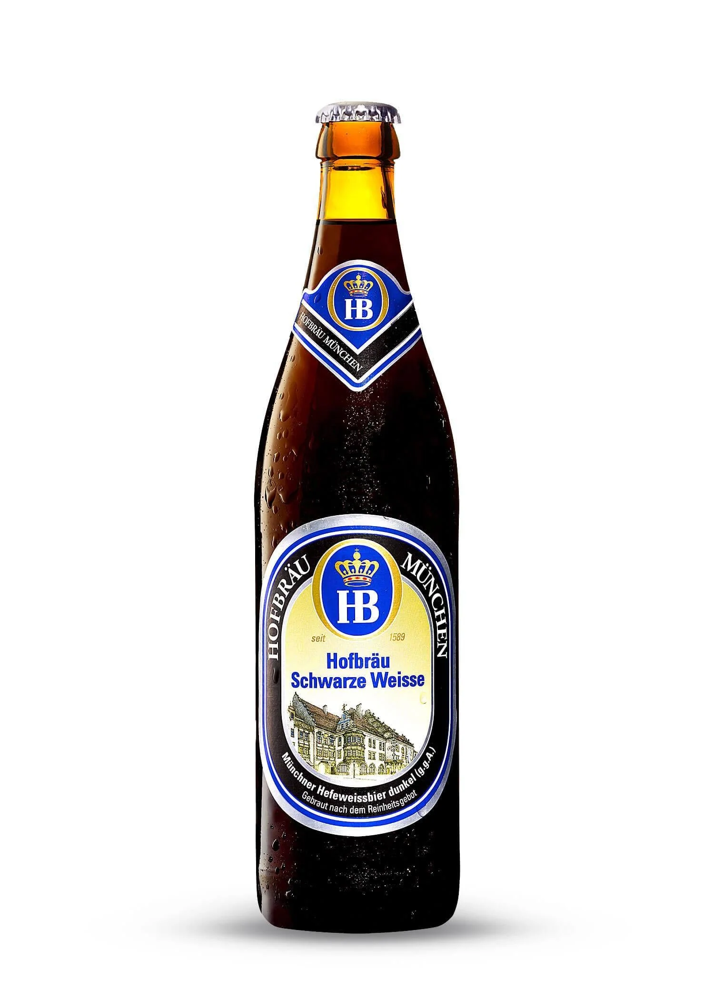

Hofbrau Schwarse Weisse.

Hofbrau Schwarze Weisse
Es la variante oscura de la Münchner Weisse de HB, una cerveza de trigo alta fermentación con un 5,1% de alcohol. Como buen ejemplo dentro de las cervezas de trigo, el plátano se encuentra muy presente en el aroma, de una forma más madura y dulce, combinada con notas de malta tostada, masa de pan y matices más tenues de especias. Sus comienzos fueron de forma exclusiva para el Duque y familias de la élite muniquesa, y solo hombres. Dejó esta exclusividad en 1829 por orden de Ludwig I, abriendo sus puertas al público y bajando los precios para que todos pudierann beber sus cervezas, así se convirtió en el centro de la vida pública y política de Munich y de toda Alemania.

Vista: Color caoba profundo, con espuma abundante y esponjosa, ligeramente beige..

Olfato: Notas de plátano y especias (vainilla, clavo y pimienta dulce), acompañadas de ligeras notas de pan tostado.

Gusto: Cerveza ligeramente dulce, con carácter de malta y matices especiados de vainilla. El final es seco y especiado con notas de clavo.